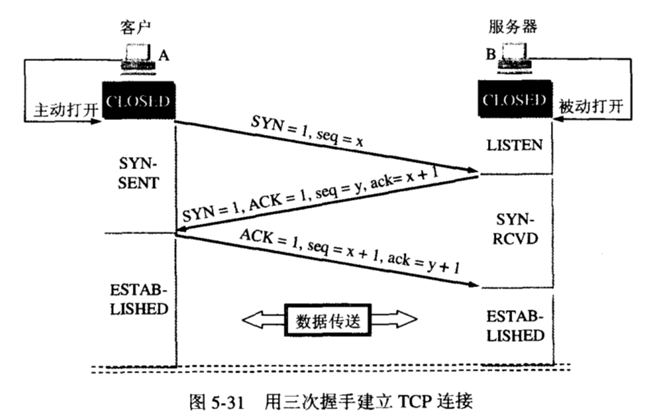

2. TCP
TCP （Transmission Control Protocol，传输控制协议）是一种 面向连接的、可靠的、基于字节流 的传输层通信协议。
2.1. 三次握手与四次挥手
2.1.1. 三次握手
{kind=link}
- 第一次握手
起初两端都处于CLOSED关闭状态，
Client将标志位SYN置为1，随机产生一个值seq=x，并将该数据包发送给Server，Client进入SYN-SENT状态，等待Server确认。
- 第二次握手
Server收到数据包后由标志位SYN=1得知Client请求建立连接，Server将标志位SYN和ACK都置为1，ack=x+1，随机产生一个值seq=y，并将该数据包发送给Client以确认连接请求，Server进入SYN-RCVD状态，此时操作系统为该TCP连接分配TCP缓存和变量。
- 第三次握手
Client收到确认后，检查ack是否为x+1，ACK是否为1，如果正确则将标志位ACK置为1，ack=y+1，并且此时操作系统为该TCP连接分配TCP缓存和变量，并将该数据包发送给Server。Server检查ack是否为y+1，ACK是否为1，如果正确则连接建立成功，Client和Server进入ESTABLISHED状态，完成三次握手，随后Client和Server就可以开始传输数据。
备注
- 为什么
Client还要发送一次确认呢？可以二次握手吗？ 主要为了防止已失效的连接请求报文段突然又传送到了
Server，因而产生错误。如Client发出连接请求，但因连接请求报文丢失而未收到确认，于是Client再重传一次连接请求。 后来收到了确认，建立了连接。数据传输完毕后，就释放了连接，Client发出了两个连接请求报文段，其中第一个丢失，第二个到达了Server，但是第一个丢失的报文段只是在某些网络结点长时间滞留了，延误到连接释放以后的某个时间才到达Server，此时Server误认为Client又发出一次新的连接请求，于是就向Client发出确认报文段，同意建立连接。 不采用三次握手，只要Server发出确认，就建立新的连接了，此时Client不理睬Server的确认且不发送数据，则Server一直等待Client发送数据，浪费资源。
2.1.2. 四次挥手

- 第一次挥手
Client的应用进程先向其TCP发出连接释放报文段（FIN=1，序号seq=u），并停止再发送数据，主动关闭TCP连接，进入FIN-WAIT-1（终止等待1）状态，等待Server的确认。
- 第二次挥手
Server收到连接释放报文段后即发出确认报文段，（ACK=1，确认号ack=u+1，序号seq=v），Server进入CLOSE-WAIT（关闭等待）状态，此时的TCP处于半关闭状态，Client到Server的连接释放；Client收到Server的确认后，进入FIN-WAIT-2（终止等待2）状态，等待Server发出的连接释放报文段。
- 第三次挥手
Server没有要向Client发出的数据了，Server发出连接释放报文段（FIN=1，ACK=1，序号seq=w，确认号ack=u+1），Server进入LAST-ACK（最后确认）状态，等待Client的确认。
- 第四次挥手
Client收到Server的连接释放报文段后，对此发出确认报文段（ACK=1，seq=u+1，ack=w+1），Client进入TIME-WAIT（时间等待）状态。Server收到确认报文段后进入CLOSED状态。经过时间等待计时器设置的时间2MSL后，
Client才进入CLOSED状态。
备注
- 为什么连接的时候是三次握手，关闭的时候却是四次挥手？
因为当
Server收到Client的SYN连接请求报文后，可以直接同时发送SYN+ACK报文。其中ACK报文是用来应答的，SYN报文是用来同步的。但是关闭连接时，当Server端收到FIN报文时，很可能并不会立即关闭SOCKET，所以只能先回复一个ACK报文，告诉Client端：“你发的FIN报文我收到了，只有等到我Server端所有的报文都发送完了，我才能发送FIN报文”。 即FIN和ACK不能一起发送，故需要四步握手。
- 为什么
Client需要经过2MSL（最大报文段生存时间）才能从TIME_WAIT状态进入CLOSE状态？ 最后一个ACK有可能丢失，所以TIME_WAIT状态就是用来重发可能丢失的ACK报文。
- 为什么
2.2. TCP 和 UDP 的区别
TCP 是 面向连接的、可靠的、基于字节流 的数据流传输协议，效率低。面向连接是在发送数据之前，在收发主机之间连接一条逻辑通信链路，适用于要求可靠传输的应用，例如文件传输。
UDP （User Datagram Protocol，用户数据协议）是 非面向连接的、不可靠 的数据流传输协议。不需要建立连接，只需要知道对方的IP（Internet Protocol）地址和端口号（port），就可以直接发数据包，因此效率高，适用于实时应用，例如：IP电话、视频会议、直播等。
2.3. 参考资料
TCP三次握手和四次挥手过程